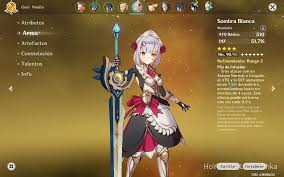

Personajes:
·En el mundo de teyvat existen decenas de personajes que varian por los elementos que rigen las naciones y el tipo de arma que usan.
Armas:
- Espada ligera para ataques rapidos pero debiles
- Mandoble para ataques lentos pero fuertes

- Catalizador para concentrar el uso de su elemento en atacar de diferentes maneras
- Lanza para una versaitilad y alcance en cuerpo a cuerpo
- Arco para usar el poder elemental a largas distancias